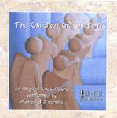

| Artist: | Madmen & Dreamers |
| Title: | The Children Of Children |
| Label: | MadElf Productions |
| Length(s): | 73+50 minutes |
| Year(s) of release: | 2000 |
| Month of review: | [05/2001] |
| 2) | The Conception Of Children (part 1) | 3.00 |
| 3) | Conception | 1.02 |
| 4) | The Big Belly Blues | 2.57 |
| 5) | Birth | 1.53 |
| 6) | The Children Of Children (part 2) | 2.18 |
| 7) | What About Me? | 1.59 |
| 8) | Love At A Distance | 5.46 |
| 10) | Another Joyful Day | 3.29 |
| 12) | Retreat | 11.19 |
| 13) | Running Wild (part 1) | 0.58 |
| 14) | Running Wild (part 2) | 2.48 |
| 15) | Running Wild (part 3) | 2.07 |
| 16) | Running Wild (part 4) | 0.59 |
| 17) | Listen To Me | 4.35 |
| 18) | The Shell | 2.22 |
| 19) | Your Fault | 2.47 |
| 20) | I Don't Know You Anymore | 2.54 |
Disc 2:
| 1) | Why Did You Stay? | 3.23 |
| 2) | All I Need Is Life | 5.10 |
| 3) | Listen To Me (reprise) | 2.11 |
| 6) | One Moment Please | 1.58 |
| 7) | Such As It Is | 3.44 |
| 8) | An Eagle And A Dove | 4.35 |
| 10) | The Life You've Given Me | 4.09 |
| 11) | And As For Me | 2.02 |
| 12) | Where Are You Now | 5.13 |
The second track is a vocal one. The vocals are very much in "musical" style, melodies but more "telling" something than really singing. The male part of the vocals are rather weak I think. The vocalist is not much at home when he has to sing low and soft. The female vocals are soprano like, a bit too high for my liking. The song itself has some strong points with again the guitar shining through.
The Big Belly Blues is just that. The woman in the story is now pregnant and eating a lot. The song is supposed to be somewhat humourous, but I do not like the music.
What About Me? is a slow moving piece (rather like Enya), with the man and woman talking about the fact that they have so little time for themselves. Money problems, lack of time too many jobs, it all seems inevitable that things come to a clash soon.
Love At A Distance starts to show the wear and tear on the relation. The intro features mostly percussively played piano. I think for most prog lovers, the vocal melodies are maybe a bit too sweet overall here. This does occur more often, but I do also feel that the focus on the vocal parts is not a wrong one: the idea is that a story is to be told and as I listen to how the story unfolds, its proceeding is natural and realistic.
The next track is the title track and is sung feelingly, melodramatically, by the Son. Too bad the drums sound a bit automatic here. After some classical guitar in the middle rock rears its head and we get a bit of bombasm here, giving some more progressive influences. In that sense the music on this record is comparable to Merlin: A Rock Opera: melodic, musical-like vocals, telling a story with the occasional progressive touches in the instrumental parts. These "touches" are mostly reminiscent of Floyd and Camel in case of the guitar, and like these bands, the music is quite relaxed for the most part. This does lead me to the criticism that some moments might have been a bit more grander.
Another Joyful Day is jolly vaudeville stuff, which is why I do not like it. The song gets quicker and quicker, although there is a somewhat trite sounding melodic intermezzo. Like the Big Belly Blues, something am not particularly fond of, but for variety I can imagine someone wanting to put this in.
With I Will Not Fight we are halfway the first disc. The high female vocals do sound a bit thinnish to me here. Later they are doubled, which helps a bit. The guitar playing is again very emotional, but somewhat in the back this time.
Retreat is the longest track on the album and is mostly instrumental. The beginning has quite a bit of rough sounding guitar work. Then we get the vocal part, the vocal melody sounding familiar from a previous track. The song also has some parts sounding like mellotron. The guitar work then starts going again. I am reminded a bit of a progmetal band playing slow filmmusic. The build-up is long and slow with some piano interspersed and now familiar melodies occurring. Then we get the second vocal part and conclude with the "chorus". Again it shows that the vocalists are not as strong as could be hoped.
Running Wild in four parts opens with a children song and a musical box. The woman is now having someone on the side. The song has quite a bit organ and sharp notes on the guitar, but the song still, but the drums and percussion do not seem to get any drive into the song. In part three we hear the children wondering. Musically we hear some themes coming back, this is actually one of the nicer things about this album, that superficially everything seems very simple, but connections abound. The lullabye closes this track.
Listen To Me is sung by the Son again. The vocalist sounds a bit like the vocalist of Styx. Again I have the feeling the drums are automatic, which certainly does not help dynamics. The Shell continues along the same melodic lines, but has nightmarish lyrics. The music continues to be very melodic, but the piano builds in some tension. Very strong.
Your Fault is a duet, but not a loving one. The woman full of vicious reproach, the man on the defense. Unfortunately, the song lacks in drive and saying power. The man comes out better now he sings in the higher regions. The first disc closes with I Don't Know You Anymore, which is much more up-beat than the previous.
Disc 2 opens with the lamentlike Why Did You Stay? Again it shows the man is vocally not that at home in the lower regions. The music is a bit chamber orchestra like with string like synths, with a sad tenseness underlying the music. Notwithstanding the somewhat melodramatic feel, a good song. Follow-up All I Need Is Life finds the father in desperate straights, but the song turns for the optimistic at the end. The short guitar solo is good and rough.
We now have three reprises of tracks from the first act, which was concluded by the previous track. The first of these is the Styxian Listen To Me. Then comes the not so pleasant The Shell with its dark somber melodies and a magnificently crafted underlying tenseness. In these tracks it is the piano that takes to fore constantly, but the music does not lack in saying power, because of the absence of the guitar. Your Fault brings us to the daughter (and not the mother as was the case in the original version) blaming her father and the father trying to blame the mother. When the man sings in a higher more emotional voice it comes out much better.
After the short peaceful piano piece One Moment Please we come to Such As It Is. Some time has passed and a few of the wounds have healed. Peace has come at last to the protagonists, life went on. The music is maybe a bit too sweet here, and the focus is as always on the vocals and the story, and less so on variation in the music.
A new love is on the rise with the romantic An Eagle And A Dove and the blues of Tell Me. Rather straightforward stuff, and Tell Me lacks a bit the smokiness of a real blues. The Life You Given Me has some familiar melodies, or are they only variations? The song has, like many before it, easy-going percussion, soft voiced vocals and a strongly melodic content in which the piano is leading.
In And As For Me the buy says goodbye, his shell wearing thin, his life is returning to him. The final two tracks are about the father-daughter relationship which still has not healed. In Where Are You Now?, the father wonders sadly but also with reproach about his daughter. The vocals are a bit operatic here. The chorus has a strong vocal melody. In the final track the daughter tries to get closer to her father again. The vocals are a bit in the style of early Kate Bush, but sounding more classically trained it seems. It seems to me some parts of the album have been worked into it (Listen To Me?). Some parts are a bit melodramatic, but the guitar part in the middle is sharp and might remind some of Colin Bass or Camel.
Musically then. Much of the music on this disc is easy-going. It is a typical concept album with melodies reoccurring and most of the songs are rather straightforward and songoriented by themselves. This means that the "progressiveness" as people normally see it, is rather hard to find. The scope of the work however, makes it what is: a rock opera (not necessarily a progrock opera then). On the first disc there is plenty of guitar to introduce some rough edges and I particularly liked those parts. There is nothing really wrong with the many mellower tracks on the disc, although some are a bit trite, but they tend to wear on me after a while. I guess this also has to do with the focus which is on the story and less on the music.